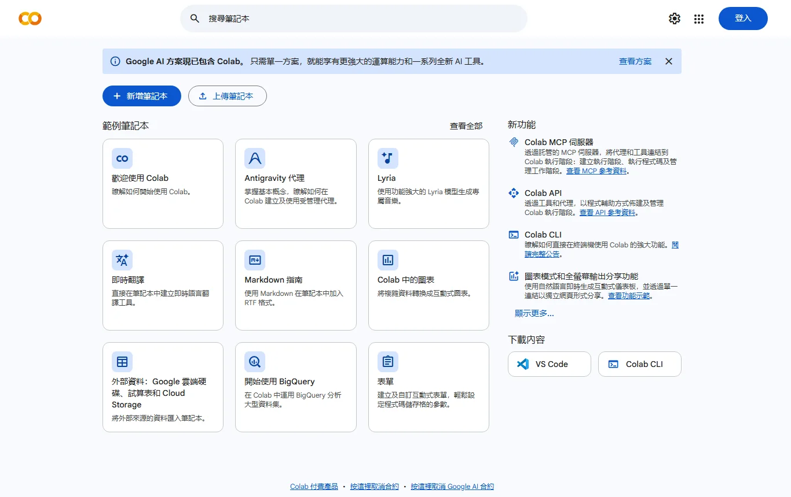

新手工具入門 · 執行 AI 寫的程式
Google Colab
免費約 3 分鐘讀完
Google 提供的免費「線上筆記本」。重點不是學寫程式，而是：AI 幫你寫好的 Python 程式，貼到這裡按一下，就能跑出結果。
01為什麼需要它？
請 AI 聊天助手「幫我把這些數字畫成圖」，它常常會給你一段 Python 程式。程式要「執行」才會變成圖表或結果，但平常要在電腦上安裝一堆東西才跑得動。
Colab 讓你直接在瀏覽器裡執行，什麼都不用裝，有 Google 帳號就能用。

02怎麼用？四個步驟
-
打開 Colab，按「新增筆記本」
用 Google 帳號登入後，就會出現一個空白的筆記本。
-
請 AI 聊天助手寫程式
我有一份每月產量的資料，請給我可以直接貼到 Google Colab 執行的 Python 程式，畫成折線圖。記得加上「可以直接在 Google Colab 執行」，AI 就會給你完整、能直接用的版本。
-
貼到程式格，按左邊的 ▶
結果會直接出現在程式下方。下面是我第 1 堂作業的畫面：上面是 AI 協助寫的程式，下面是跑出來的圖。

程式在上、結果在下（我的第 1 堂作業） -
出現紅色錯誤？整段貼回給 AI
把錯誤訊息整段複製，貼回給 AI 說「執行後出現這個錯誤」，它通常就會改好。不需要看懂錯誤在說什麼。
03用的時候注意三件事
- 可以從左邊的資料夾圖示上傳 Excel、CSV 檔讓程式讀取，但檔案會放到 Google 的雲端，公司資料要注意。
- 筆記本閒置一段時間後，上傳的檔案會被清掉，需要時再上傳一次就好。
- 筆記本可以按右上角「共用」分享連結，別人打開就能看到程式和結果。